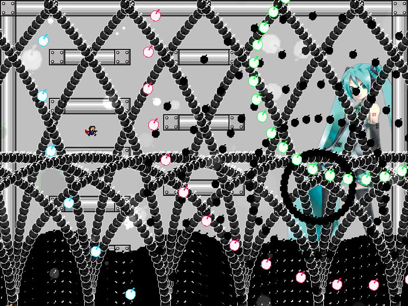
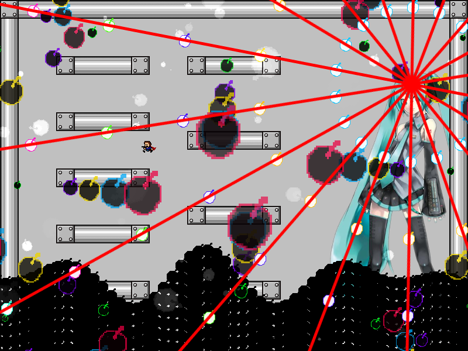
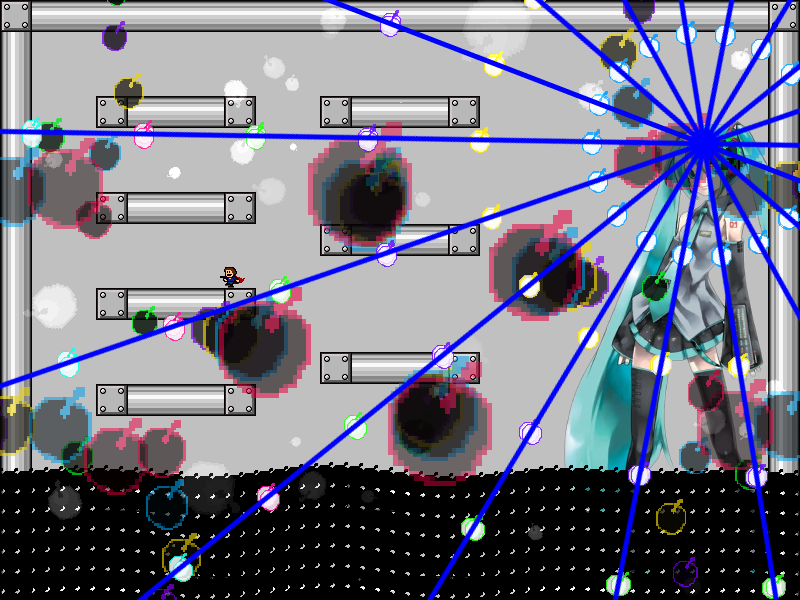
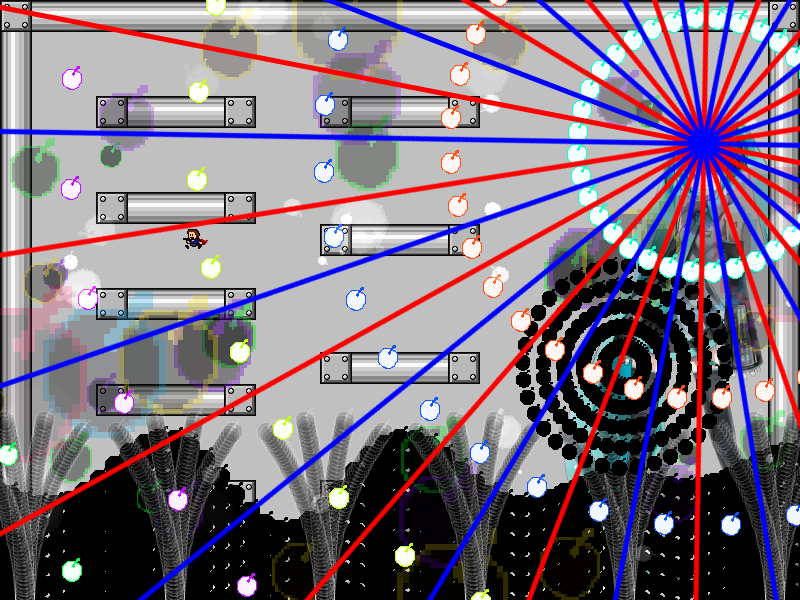
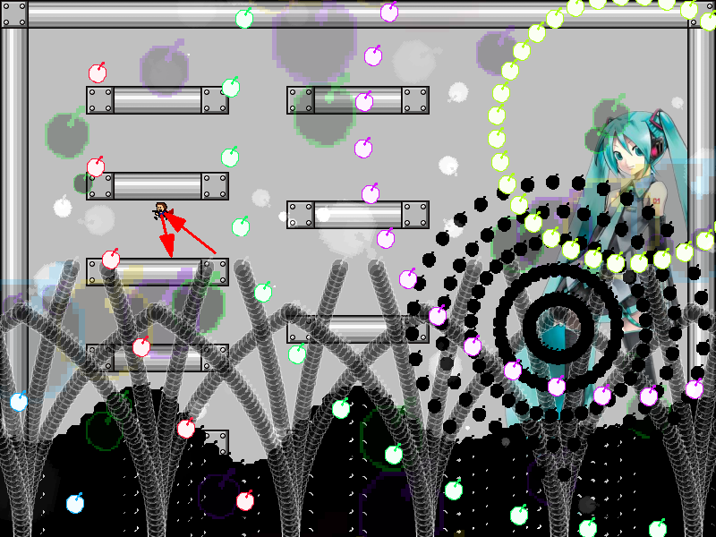
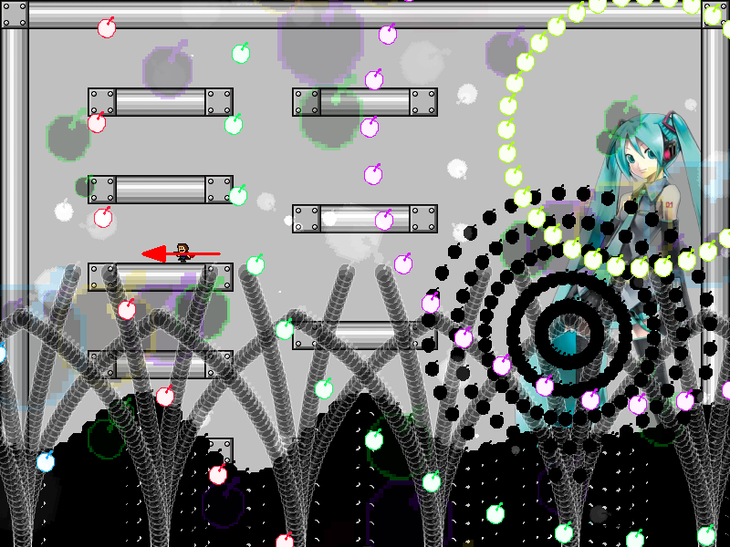

| creator | segment | label | jump |
|---|---|---|---|
| NN | 0:43.90~0:44.70 | P*A | double |
4-2の解答に対応する、角度のみがランダムな弾幕です。
初音ミク頭部を中心とする同心円状弾幕に関して、0:42.80~0:43.10において回転している最中に回転方向がそれぞれ異なる円形弾幕同士が交差するときの角度（fig.4-3.1.a, fig.4-3.1.b）が、0:43.10において発射される際に最も開く角度（fig.4-3.2）と一致している性質を利用することを目的としています。
なお、これらの当たり判定は0:44.30において画面中央から場面転換の演出が生成された時点でなくなります。



また、0:43:10において初音ミク右手部を中心として生成される黒色の同心円状弾幕に関して、これらは角度および射出速度について生成時のプレイヤーの位置を基準として決定されます。
具体的には、角度については生成時の中心から見たプレイヤーの角度を基準に振動（振幅は各時刻における中心-プレイヤー間の距離と半径との差分の二乗に比例）しており、射出速度については生成から25step経過後に射出時のプレイヤーの位置に到達するように決定されます。
なお、これらの当たり判定は生成から25step経過後になくなります。
以上のことから、角度を誘導する（fig.4-3.3.a）、または発射源から離れる（fig.4-3.3.b）ことによって回避することができます。


また、画面下部から生成される樹状弾幕に関して0:44:30において画面中央から場面転換の演出が生成されるまで当たり判定が存在しないことを利用することで攻略がしやすくなるかもしれません。